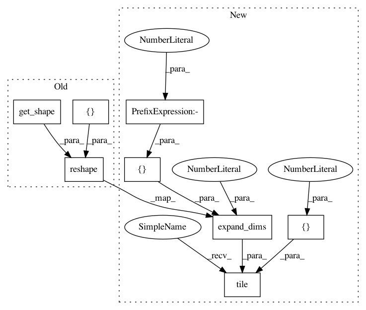

ef02e000358699dd92b9640510c71af2b5152e52,niftynet/layer/loss_segmentation.py,,dice_nosquare,#Any#Any#Any#,423
Before Change
// dice
if weight_map is not None:
n_classes = prediction.shape[1].value
weight_map_nclasses = tf.reshape(
tf.tile(weight_map, [n_classes]), prediction.get_shape())
dice_numerator = 2.0 * tf.sparse_reduce_sum(
weight_map_nclasses * one_hot * prediction, reduction_axes=[0])
dice_denominator = \
tf.reduce_sum(prediction * weight_map_nclasses,
After Change
// dice
if weight_map is not None:
n_classes = prediction.shape[1].value
weight_map_nclasses = tf.tile(tf.expand_dims(
tf.reshape(weight_map, [-1]), 1), [1, n_classes])
dice_numerator = 2.0 * tf.sparse_reduce_sum(
weight_map_nclasses * one_hot * prediction, reduction_axes=[0])
dice_denominator = \
tf.reduce_sum(prediction * weight_map_nclasses,
In pattern: SUPERPATTERN
Frequency: 3
Non-data size: 8
Instances
Project Name: NifTK/NiftyNet
Commit Name: ef02e000358699dd92b9640510c71af2b5152e52
Time: 2018-07-25
Author: carole.sudre.12@ucl.ac.uk
File Name: niftynet/layer/loss_segmentation.py
Class Name:
Method Name: dice_nosquare
Project Name: NifTK/NiftyNet
Commit Name: ef02e000358699dd92b9640510c71af2b5152e52
Time: 2018-07-25
Author: carole.sudre.12@ucl.ac.uk
File Name: niftynet/layer/loss_segmentation.py
Class Name:
Method Name: dice
Project Name: NifTK/NiftyNet
Commit Name: ef02e000358699dd92b9640510c71af2b5152e52
Time: 2018-07-25
Author: carole.sudre.12@ucl.ac.uk
File Name: niftynet/layer/loss_segmentation.py
Class Name:
Method Name: generalised_dice_loss